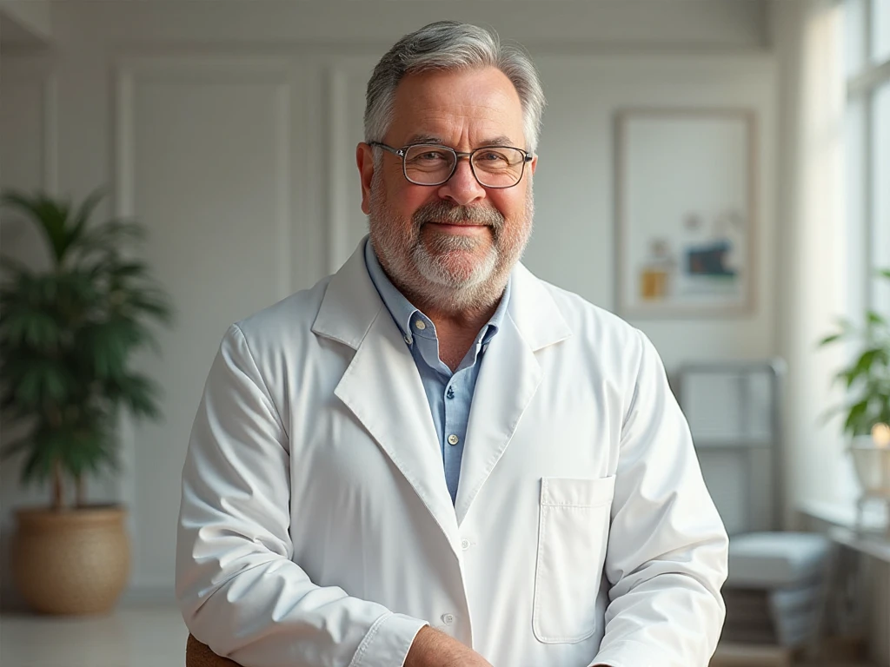

+38(068) 79 72 782
+38(068) 79 72 782Нарколог на дом Киев
Анонимно и безопасно


Бесплатная консультация, работаем круглосуточно 24/7
Анонимно и безопасно
Зависимость — это тяжёлое испытание, которое может привести к критической ситуации в любой момент. Когда человек находится в состоянии запоя или переживает мучительный синдром отмены, каждая минута на счету. Именно в этот момент быстрая и квалифицированная помощь становится жизненно необходимой. Экстренный вызов нарколога в Киеве — это не просто удобная услуга, а единственно верное решение, когда ситуация требует немедленного вмешательства.
Эта услуга обеспечивает не только оперативность, но и полную безопасность. Самостоятельные попытки справиться с абстиненцией могут быть крайне опасны и привести к непредсказуемым последствиям, таким как судороги, сердечный приступ или алкогольный делирий. Профессиональный врач на дому способен купировать эти риски. К тому же, это надёжный и конфиденциальный способ получить помощь. Специалист приезжает на обычном автомобиле, сохраняя полную анонимность, что позволяет избежать осуждения и не привлекать лишнего внимания к проблеме.
В конечном итоге, экстренный вызов нарколога — это не просто медицинская процедура. Это первый и самый важный шаг на пути к выздоровлению. Он помогает стабилизировать физическое и эмоциональное состояние, создавая прочную основу для дальнейшего, полноценного лечения.
Услуга “нарколог на дом” создана специально для тех, кто оказался в критической ситуации, но не имеет физической возможности или психологической готовности обращаться в стационар. Мы понимаем, что в такие моменты человек может чувствовать себя уязвимым и не хочет огласки. Поэтому наша служба гарантирует полную анонимность на всех этапах. Врач приезжает на обычном автомобиле и в гражданской одежде, что позволяет избежать лишних вопросов и получить помощь в привычных, комфортных условиях, где пациент чувствует себя в безопасности.
Оперативность — наш главный приоритет. Врач прибудет по указанному адресу в течение 30-40 минут, готовый немедленно оказать необходимую помощь. Это критически важно, поскольку каждая минута промедления в состоянии острой интоксикации может быть опасна. Наш специалист проводит полную диагностику состояния пациента, оценивает риски и назначает индивидуальный план лечения, будь то выведение из запоя, снятие абстинентного синдрома или облегчение похмелья.
Эта услуга — не просто медицинская процедура, а проявление заботы и сострадания. Она помогает не только стабилизировать физическое состояние, но и вселяет надежду на скорейшее выздоровление, ведь вы знаете, что профессиональная и тактичная помощь находится всего в одном звонке от вас.
Приехав на вызов, специалист в первую очередь проводит комплексную диагностику состояния пациента. Это не просто быстрый осмотр, а тщательное изучение анамнеза, оценка текущего физического состояния и сбор информации, необходимой для индивидуального подбора медикаментов. На основе полученных данных врач оказывает целый спектр жизненно важных услуг.
Выведение из запоя и снятие похмелья. Это наиболее частые запросы. Процедура проводится с помощью индивидуально подобранных капельниц, которые действуют быстро и эффективно. Они помогают очистить организм от токсинов, восстановить водно-солевой баланс, снять мучительные симптомы, такие как тошнота, тремор и головная боль. Эта процедура помогает не только облегчить физическое состояние, но и восстановить ясность мысли, что крайне важно для дальнейшей работы с проблемой.
Снятие ломки. В случае наркотической зависимости врач помогает облегчить мучительные симптомы абстинентного синдрома. Эта процедура жизненно необходима, так как попытки справиться с ломкой самостоятельно могут быть крайне опасны и привести к непредсказуемым последствиям. Специалист использует медикаменты, которые облегчают боль, судороги и нервное напряжение, делая процесс максимально безопасным и комфортным.
Консультация. Помимо экстренной помощи, врач обязательно проводит подробную консультацию. Он отвечает на все вопросы, даёт профессиональные рекомендации по дальнейшему лечению и реабилитации, и что самое важное, оказывает психологическую поддержку, помогая человеку сделать первый шаг к полноценной, трезвой жизни.
Процесс вызова нарколога домой в Киеве сделан максимально простым и интуитивно понятным, чтобы в критический момент вы не теряли драгоценное время. Мы понимаем, что в состоянии кризиса каждая минута на счету, а принять решение о звонке может быть очень сложно. Наша задача — сделать этот шаг как можно легче.
Все, что вам нужно сделать — это достаточно позвонить по телефону. На другом конце провода вас встретит опытный и эмпатичный оператор, который готов принять ваш вызов в любое время суток. Он не будет задавать лишних вопросов и не станет осуждать. Вместо этого, он уточнит ваше состояние, чтобы понять, какая помощь необходима, ответит на все ваши вопросы и направит бригаду по указанному адресу.
Быстрая и слаженная работа нашей команды позволяет оказать помощь в кратчайшие сроки, что критически важно в экстренных ситуациях. Не нужно тратить время на сборы и дорогу в клинику. Профессиональная помощь придёт прямо к вам, обеспечив безопасность и конфиденциальность. Этот звонок — ваш первый и самый важный шаг к спасению.
Стоимость вызова нарколога в Киеве начинается от 2700 грн.
| Популярные услуги | Цена |
|---|---|
| Вывод из запоя на дому | От 2700 грн |
| Капельница от алкоголя | От 2700 грн |
| Капельница от наркотиков | От 3000 грн |
| Кодирование от алкоголизма Киев | От 6000 грн |
Капельница от алкоголя — это наиболее эффективный способ быстро и безопасно вывести пациента из состояния запоя. Она действует как экстренная помощь при тяжёлой интоксикации, мгновенно облегчая мучительные симптомы, такие как тошнота, рвота, головная боль и тремор. Благодаря внутривенному введению раствор сразу попадает в кровь, минуя желудок, что обеспечивает немедленный эффект.
Состав капельницы тщательно подбирается для каждого случая и обычно включает комплекс витаминов, минералов и специальных препаратов. Витамины группы В поддерживают нервную систему, электролиты (калий, магний) восстанавливают критически важный водно-солевой баланс, а детоксикационные компоненты очищают кровь от токсинов. Эти препараты не только стабилизируют состояние, но и поддерживают работу жизненно важных органов.
Важно понимать, что эта процедура — это не полноценное лечение зависимости, а лишь его необходимый первый шаг. Она помогает привести тело в порядок и восстановить ясность мысли, что является прочной основой для дальнейшей терапии. Только после этого можно приступать к работе над психологическими причинами зависимости, чтобы достичь устойчивой и долгосрочной ремиссии.
Капельница от наркотиков используется для снятия ломки — мучительного абстинентного синдрома, который возникает при прекращении употребления психоактивных веществ. Это не просто дискомфорт, а острая и порой опасная для жизни реакция организма. Капельница помогает облегчить невыносимую боль, судороги, тошноту, тремор и психоэмоциональные расстройства, вызванные отменой наркотиков. Она является единственным безопасным и эффективным способом пройти через этот критический период.
В состав раствора входят мощные детоксикационные компоненты, которые активно выводят из организма остатки наркотических веществ и продукты их распада. Помимо этого, капельница содержит седативные и поддерживающие препараты, которые нормализуют работу нервной системы, снимают тревогу и бессонницу. Витамины, минералы и другие вспомогательные средства восстанавливают истощённый организм, поддерживают сердечно-сосудистую систему и почки.
Эта процедура — ключевой первый шаг, который помогает подготовить организм к дальнейшему лечению. После физического облегчения человек может ясно мыслить и принимать осознанные решения о своём будущем. Это создаёт надёжную основу для психотерапии и полноценной реабилитации, направленной на достижение устойчивой ремиссии.
Кодирование от алкоголизма — это один из самых надёжных и проверенных методов, направленных на достижение длительной ремиссии. Эта процедура создаёт мощный физиологический барьер, который помогает человеку, оказавшемуся в замкнутом круге зависимости, сделать решительный шаг к трезвости. Она не просто лечит, а даёт надежду и реальный инструмент для борьбы.
Действие кодирования основано на том, что употребление алкоголя становится невозможным и опасным для жизни. Препарат, введённый в организм, блокирует ферменты, отвечающие за расщепление этилового спирта. В результате, даже небольшое количество алкоголя вызывает острую и крайне неприятную реакцию: сильную тошноту, рвоту, учащённое сердцебиение, скачки давления и головную боль. Осознание этого физиологического барьера помогает человеку контролировать себя и не поддаваться искушению.
Это даёт пациенту необходимое время, чтобы сфокусироваться на психологической работе. Освободившись от постоянной борьбы с физической тягой, он может наконец-то заняться глубинными причинами зависимости. В сочетании с психотерапией и реабилитацией, кодирование позволяет восстановить свою жизнь без зависимости, найти новые увлечения, наладить отношения с близкими и вновь обрести внутреннюю гармонию.
Наша наркологическая помощь в Киеве — это не просто экстренные меры для снятия симптомов. Мы предлагаем всестороннюю поддержку на всех этапах лечения, понимая, что зависимость — это сложное заболевание, требующее комплексного и индивидуального подхода. Наша цель — не просто помочь вам справиться с кризисом, а провести вас по пути к полноценному и устойчивому выздоровлению.
Мы создаём индивидуальные программы терапии, которые учитывают особенности каждого пациента: тип зависимости, стадию заболевания и личные обстоятельства. Лечение включает в себя три ключевых компонента:
Мы верим, что каждый человек заслуживает второго шанса. Наша миссия — помочь вам не просто выйти из замкнутого круга зависимости, а вернуть здоровье, гармонию и радость полноценной, трезвой жизни.
Если вы или ваш близкий человек столкнулись с проблемой зависимости, не отчаивайтесь. Мы знаем, что это тяжелое и изнурительное испытание, которое часто сопровождается чувством безысходности и одиночества. Но помните, что помощь всегда рядом, и она находится всего в одном звонке от вас. Наша миссия — стать для вас надёжной опорой в этот сложный период, оказать профессиональную и тактичную поддержку, чтобы вы смогли вырваться из замкнутого круга.
Сделать первый шаг — всегда самое трудное. Но именно он является самым важным и решительным на пути к выздоровлению. Когда вы звоните нам, вы делаете выбор в пользу новой, счастливой жизни, полной гармонии и радости. Мы понимаем вашу потребность в анонимности и безопасности, поэтому гарантируем полную конфиденциальность.
Не позволяйте зависимости разрушать вашу жизнь. Сделайте этот важный звонок прямо сейчас. Мы работаем круглосуточно и готовы прийти на помощь в любой момент, когда вы будете готовы принять её.
Телефон: +38(050-021-69-57)
Анонимно

Никакими усилиями самостоятельно я не смогла преодолеть запой, и наступала ломка, сопровождаемая повышенным давлением и пульсом. Тогда я решила обратиться за помощью в клинику. Врачи оказали мне неоценимую поддержку! Уже прошел месяц, и я не только не употребляю алкоголь, но даже не испытываю к нему желания!
Анонимно
Могу с уверенностью порекомендовать данный центр для тех, кто ищет помощь при выводе из запоя. Я неоднократно обращался к ним и могу сказать, что цена соответствует качеству услуг. После проведения капельницы в клинике, вся тяга к алкоголю проходит, и я чувствую себя гораздо лучше. Это действительно эффективный метод, и я благодарен клинике за их профессионализм и заботу!
Анонимно
Неоднократно я пытался бросить алкоголь самостоятельно, но каждый раз уговаривал себя продолжать. Я сначала ограничивался одной бутылкой в день, потом двумя, и в итоге вновь попадал в запой. Но в итоге, я смог прекратить употребление алкоголя только после того, как обратился в центр Амбрелла и заказал у них услугу вывода из запоя. Уже не пью 3 месяца и удалось полностью восстановиться. Благодарю врача который меня вел - Алексея Валерьевича
Анонимно
Здравствуйте! Я хотел бы выразить свою искреннюю благодарность клинике за быстрое и профессиональное освобождение моего мужа пивного рабства! Ранее у меня уже не было никаких надежд на его выздоровление. Однако, благодаря вашим перспективным методам лечения, мы теперь идем к полному отказу от алкоголя. Вы дали нам новую надежду и оказали неоценимую помощь! Спасибо вам за все!
Анонимно
Я долгое время страдал от запоев и не мог справиться с этой проблемой. Однако, когда я обратился в этот центр, они быстро помогли мне вернуться на ноги, и самое главное - предоставили мне возможность не возвращаться к запоям. Уже почти полгода я не испытываю запоев! Это для меня настоящее чудо, я никогда не думал, что смогу так преодолеть свои проблемы. Большое спасибо центру Амбрелла!
Анонимно
Благодарю ваш центр Амбрелла за оперативное и высококачественное лечение! Женский алкоголизм - это настоящее горе, с которым невозможно справиться в одиночку. Я уже потеряла надежду, но благодаря вашей помощи, она вернулась ко мне! Отдельная благодарность врачу Станиславу Вячеславовичу, а также благодарность Богу за то, что он послал мне такое чудо как ваша центр! Спасибо вам всем!
Анонимно
Хочу выразить благодарность врачу Владиславу Алексеевичу за то, что вы избавили меня от этого ужаса. Я уже был в отчаянии, перепробовал множество клиник и центров, но только здесь я наконец получил настоящую помощь! Алкоголь полностью разрушил меня, и если бы не ваша помощь, я, возможно, уже не был бы жив. С вами я смог вернуть себе жизнь и буду благодарен вам всегда!
Номер телефона:
+380 (68) 797 27 82
+380 (50) 021 69 57
Адрес наркологического центра вашего города
уточняйте по телефону
Работаем в: Киеве, Одессе, Львове, Харькове, Днепре,
Запорожье, Черкассах, Чугуеве, Черноморске, Каменском
Telegram: t.me/umbrellaplus
График работы: Круглосуточно